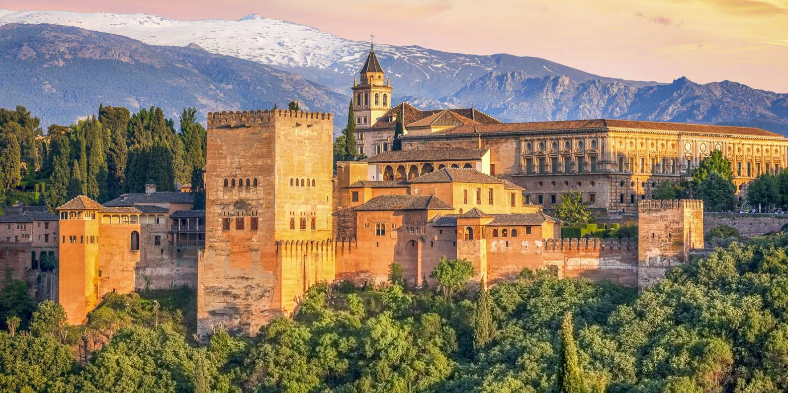

LA ALHAMBRA
Un lugar para visitar
La visita a la Alhambra incluye los Palacios Nazaríes, la Alcazaba y el Generalife, si compras la Entrada General. Eso sería el conjunto monumental completo. Sin embargo, con la entrada Generalife podrás visitar la Alcazaba y el Palacio del Generalife con sus jardines, pero no los Palacios Nazaríes.

Podemos observar un gran paisaje de Granada donde vemos la Alhambra y al fondo Sierra Nevada.
LA CATEDRAL DE GRANADA
Un lugar para visitar
Es una de las obras cumbre del Renacimiento español. Construida en 1505 por orden de Isabel la Católica, la catedral de Granada o catedral de la Encarnación conserva en su interior la famosa “Inmaculada” de Alonso Cano y un magnífico retablo. Destaca especialmente la imponente Capilla Mayor. Las naves laterales se cierran con numerosas capillas de diferentes estilos y épocas. Uno de sus arquitectos fue Diego de Siloé.
Podemos observar la catedral desde la Plaza de las Pasiegas.
EL ARCO DE ELVIRA
Un lugar para visitar
La Puerta de Elvira o Arco de Elvira fue la antigua puerta de acceso a la Alhacaba y el Albaicín. Es un gran arco de herradura cuya construcción por parte de los sultanes data de principios del siglo XI. Actualmente solo se conserva el arco, pertenecía a una fortaleza. Es uno de los monumentos más antiguos de la ciudad, fiel testigo del glorioso pasado islámico de Granada.

Podemos observar el arco de noche.